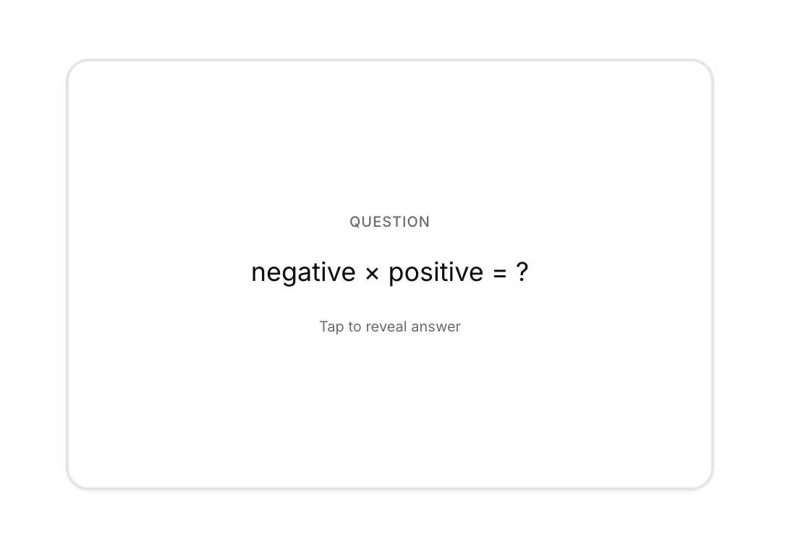
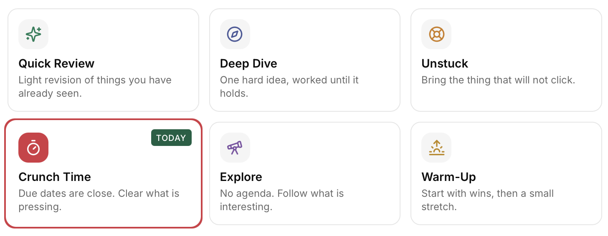
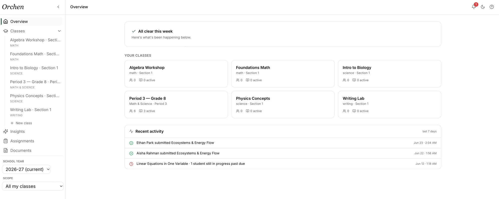

Complete the task.
- Answer first
- Optimize for speed
- Leave school invisible
Orchen gives schools a governed AI tutor that helps students think, then turns learning signals into clear insight for teachers, advisors, and families.
Why now? Read the research →Orchen is a managed AI learning environment built for schools. Students get a Socratic AI tutor that works through problems with them and teaches instead of simply answering.
Everything that happens in those conversations becomes structured insight, routed to the people who support that student. Teachers see how their class is really doing. Parents get a clear picture of their child, without raw chat logs. It is one connected environment, purpose-built for schools from the first line of code.
See the full platform architecture →Students are already using AI. Orchen gives schools a version built to slow them down, keep them thinking, and show adults what support is needed next.
Orchen works through problems with students instead of handing them answers — then turns every conversation into flashcards, quizzes, and a learning profile that grows with them.


Every student conversation becomes a live picture of your class — who’s on track, who’s quietly stuck, and who needs you today. Before the test says so.
Know what your child is learning, where they’re struggling, and what’s going well — in plain language, not dashboards.
You decide how the AI behaves — what it will and won’t do — and every classroom inherits it. Everything rolls up into a school-wide view you can stand behind.

Orchen runs as a software application on your school's existing devices — iPads, MacBooks, or any managed fleet. For schools that want airtight network-level enforcement, a pre-configured managed device layer is available as an optional add-on. No IT setup required either way.
The Orchen demo is open — no signup, no sales call. Ask it something a student would ask, and watch it teach instead of answer.
“When kids replace effortful learning with generative AI to shortcut assignments, it is quantifiably bad for their cognitive development. Students must make mistakes to become independent thinkers.”National School Boards Association · January 2026
I built Orchen because the two answers schools were being offered — ban AI, or look away — both seemed designed to fail the students. The research made the stakes clear; what was missing was an environment a school could actually take responsibility for: one that teaches instead of completing work, and treats student data like it belongs to the student.
Orchen is early-stage, and I'd rather say that plainly than dress it up. What early means in practice: schools that join now work directly with me — on configuration, on the pilot, on the roadmap. Every privacy commitment on this site is one I can show you in the architecture, live, with your technical reviewer in the room.
If you're weighing this decision for your school, write to me. You'll get a straight answer — including honest guidance on timing, if a later cohort would serve your school better.
No — and that’s by design, not policy. Adults see derived insight scoped to their role: teachers see class patterns, parents get plain-language digests. Raw conversations are erased within seven days, and every student keeps a private workspace that belongs to them alone. The full model is documented in the Trust Center.
Orchen is built around both statutes: row-level security at the database layer, immutable audit logs of every staff access, per-school retention policies, and under-13 protections via the role gate. Your technical reviewer can verify every claim against the live architecture during the walkthrough — the platform page covers the details.
No new hardware and no IT project. Orchen runs in the browser on whatever fleet you already manage — iPads, Chromebooks, MacBooks. Configuration is an afternoon, not a semester. Schools that want network-level enforcement can add the optional managed device layer later.
Teachers read Orchen like a morning briefing — the platform does the managing. The class view shows who’s on track, who’s quietly stuck, who needs attention today. Creating assignments through Orchen is optional; the insight flows either way.
The Socratic design lowers the stakes of any single answer: Orchen asks students to reason and check, rather than handing down statements to accept. Subject-specific modules constrain how it teaches each discipline, and because teachers see concept-level trends across the class, a misunderstanding surfaces as a pattern — not a secret.
Pilots are small, bounded, and reversible: one class, about six weeks, working directly with the founder — then you review the data together and decide. Pricing is per school and depends on size and scope — the founding program spells out terms, timeline, and the clean exit. Write to emil@orchen.ai and you’ll get straight numbers, not a quote funnel.
Leave your details and we'll reach out to book your walkthrough.
Or write to us at emil@orchen.ai